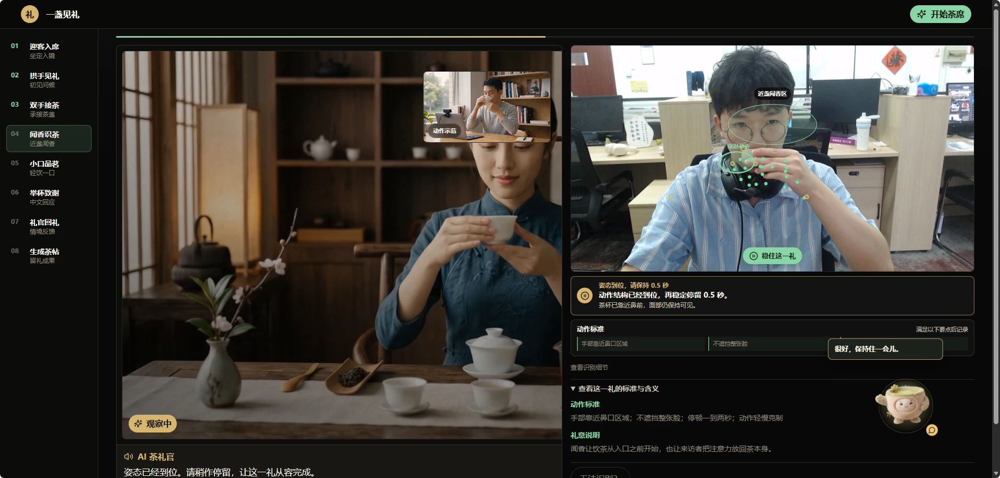
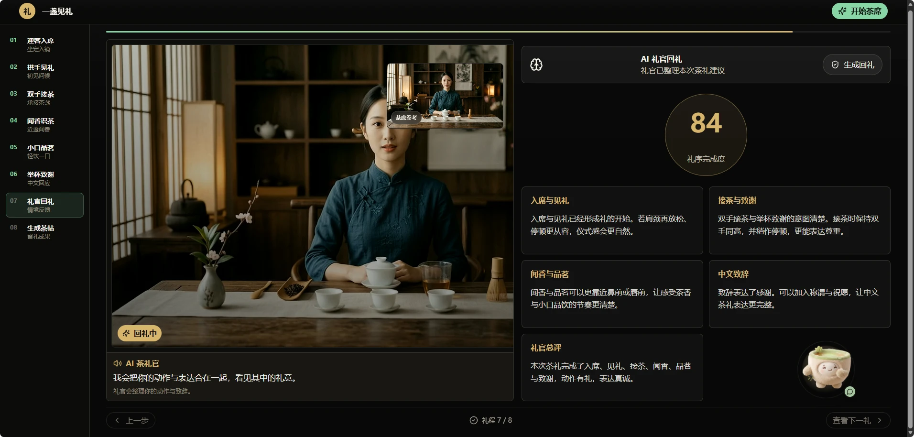
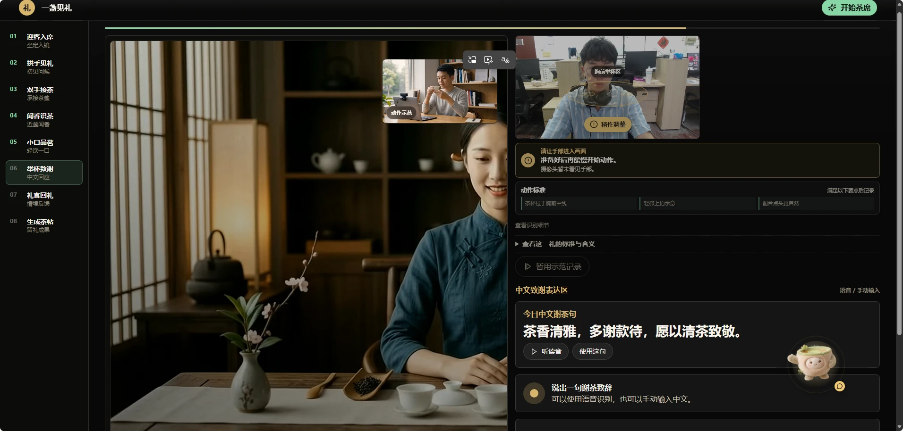
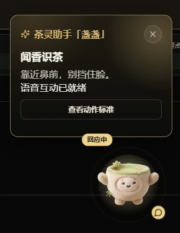

文化传播的新方式
把静态的茶文化知识转化成可参与的数字茶席：用户不是旁观一段说明，而是在 AI 茶礼官的引导下，以双手、视线、声音和选择完成“迎客—见礼—接茶—闻香—品茗—致谢”的连续礼序。
交互体验设计 · 山西文创比赛方案
坐在茶桌前，跟随礼官见礼。面向中国学习者与外国友人的茶礼具身交互体验系统，把迎客、拱手、接茶、闻香、品茗与致谢转译成一段可参与、可反馈、可复盘的文化学习过程。
打开可体验原型
PROJECT IDEA
传统茶礼的难点不只是步骤多，而是动作、距离、节奏和称谓背后都有关系。项目以“跟随礼官完成一轮茶席体验”为入口，让文化理解发生在身体动作、实时反馈和语言解释的同一个过程中。
把静态的茶文化知识转化成可参与的数字茶席：用户不是旁观一段说明，而是在 AI 茶礼官的引导下，以双手、视线、声音和选择完成“迎客—见礼—接茶—闻香—品茗—致谢”的连续礼序。
先让用户做出动作，再用茶礼标准与文化语义解释“为什么这样做”。
通过礼章评分、AI 回礼建议、语音与明信片，体验被转化为可分享的文化记忆。
RITUAL AS INTERFACE
每个状态都不是单独的页面，而是一个需要观察、动作、反馈和理解的交互节点。截图在这里承担“状态证据”，顺序本身就是设计逻辑。





EMBODIED FEEDBACK
系统将摄像头识别、动作标准、AI 讲解和茶宠反馈组织在一起。茶宠不是装饰性吉祥物，而是一个降低紧张感、承接反馈和引导继续体验的角色。

体验者的动作被系统看见后，反馈不只停留在“成功 / 失败”。礼官会说明动作标准、解释礼节含义，并用更温和的语言推动下一步。
CULTURAL TRANSMISSION
项目把“学习茶礼”延伸为“留下茶礼”。用户可以带走一次礼序记录，也可以将明信片、语音和回礼内容分享给下一位体验者，让文化从个人体验进入社交传播。
项目输出：交互流程 · 具身识别 · AI 角色 · 文化传播机制